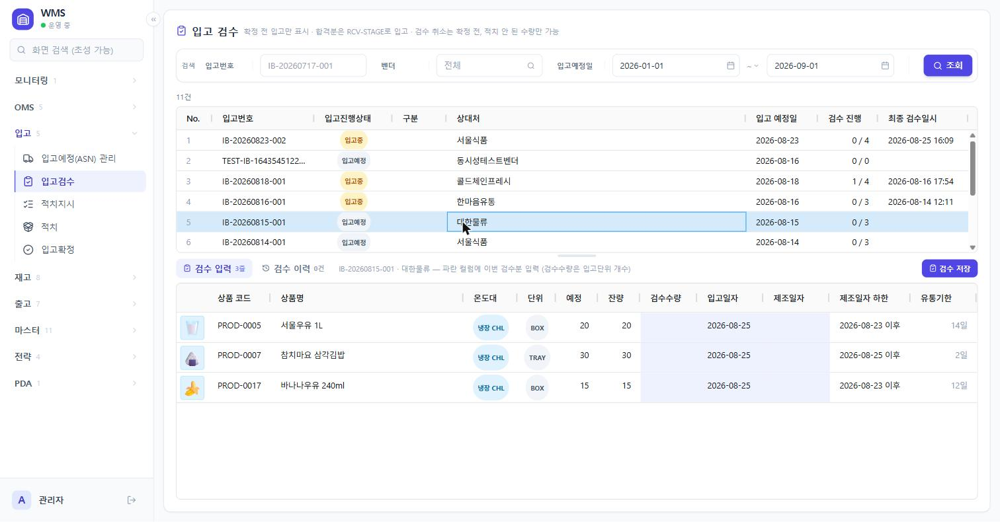

← 목차
WareFlow 사용자설명서
3. 입고
3.0 이 장의 흐름
입고예정(ASN)조회 전용
→
입고검수실물 확인
→
적치지시자리 배정
→
적치실물 이동
→
입고확정문서 마감
- 입고예정(ASN)은 이 시스템에서 만들지 않습니다. OMS의 입고주문을 확정하면 생깁니다.
- 검수를 하면 물건이 입고 스테이징(RCV-STAGE)에 재고로 잡힙니다. 아직 보관 자리에는 없습니다.
- 적치지시는 어느 보관 로케이션에 넣을지 정하는 단계입니다. 물건은 움직이지 않습니다.
- 적치를 해야 물건이 RCV-STAGE에서 보관 로케이션으로 옮겨집니다.
- 입고확정은 사람이 눌러야 끝납니다. 전량 입고돼도 자동으로 닫히지 않습니다.
사무실에서는 다섯 화면을 모두 씁니다. 현장 PDA에는 검수와 적치 두 가지만 있습니다. 지시를 내리고 취소하고 문서를 닫는 일은 사무실에서 합니다.
진행단계 읽는 법
목록에 뱃지로 표시되는 진행단계는 다섯 가지입니다. 수량과 적치지시 상황에 따라 자동으로 정해집니다. 사람이 직접 바꾸는 값이 아닙니다.
| 진행단계 | 뜻 |
|---|
| 입고예정 | 아직 검수를 시작하지 않음 |
| 검수 | 검수 중. 예정수량이 다 채워지지 않음 |
| 적치지시 | 검수는 끝났고 적치지시가 걸려 있음 |
| 적치완료 | 온 것을 다 적치함. 확정을 기다리는 상태 |
| 입고확정 | 확정 버튼을 눌러 닫음 |
덜 온 것이 있으면 적치를 다 했더라도 「검수」에 머뭅니다. 예를 들어 100개 예정에 60개만 와서 그 60개를 전부 적치했다면, 진행단계는 「적치완료」가 아니라 「검수」입니다. 나머지 40개를 아직 기다리는 중이기 때문입니다.
자주 나오는 용어
| 용어 | 뜻 |
|---|
| RCV-STAGE | 입고 스테이징. 검수한 물건이 적치 전까지 머무는 자리 |
| 반품존 | 반품입고의 불량품을 받는 자리. 받는 즉시 보류돼 출고에 쓰이지 않음 |
| Lot | 검수할 때 만들어지는 재고 묶음. 제조일자·유통기한이 여기 붙음 |
| 입고단위 | 발주·검수할 때 세는 단위(BOX, PLT 등). 검수수량은 이 단위로 입력 |
| EA(낱개) | 재고가 실제로 저장되는 단위. 상품이 섞인 합계는 EA로만 더할 수 있음 |
| FEFO | 유통기한이 임박한 것부터 처리하는 순서 |
| 미지시 | 적치지시를 아직 걸지 않은 수량 |
| 지시중 | 지시는 걸렸는데 아직 적치되지 않은 수량 |
| 라인 | 입고건 안의 상품 한 줄. 「검수 진행 1 / 4」는 상품 4종 중 1종을 다 받았다는 뜻 |
| 잔량 · 잔여수량 | 아직 남은 수량. 검수 화면은 「잔량」, 적치 화면은 「잔여수량」으로 부름 |
| 온도대 | 상온 · 냉장 · 냉동 구분. 상품과 자리의 온도대가 맞아야 넣을 수 있음 |
| 보관존 | 물건을 쌓아 두는 구역. 적치는 이곳으로 들어감 |
| 전략 · 정책 | 관리자가 「전략」 메뉴에서 미리 정해 둔 규칙. 적치 자리를 자동으로 고르거나(적치 전략), 받으면 안 되는 물건을 막음(검수 정책) |
3.1 입고예정(ASN) 관리 입고 › 입고예정(ASN) 관리
언제 쓰나
오늘 무엇이 들어오는지 보고, 개별 입고건이 어디까지 진행됐는지 확인할 때 씁니다. 조회 전용 화면입니다. 여기서 입고예정을 만들거나 지울 수 없습니다.
시작 전 준비
없습니다. 입고예정은 OMS에서 입고주문을 확정하면 자동으로 생깁니다.
화면 구성
입고예정(ASN) 관리 — 조회 기간을 넓혀(2026-01-01 ~) 조회한 상태입니다. 기본값은 오늘부터 7일 뒤까지입니다.
- 1검색 조건입고번호·진행단계·구분·벤더·입고예정일로 찾습니다.
- 2구분 열반품 표시가 붙으면 점포에서 되돌아온 반품입고입니다. 상대처가 점포로 나옵니다.
- 3진행단계 열위 표의 다섯 단계입니다. 「적치완료」는 확정을 기다린다는 뜻입니다.
- 4입고건 목록한 줄을 클릭하면 아래에 그 건의 상품이 열립니다.
- 5입고 라인선택한 입고건의 상품 목록입니다.
- 6라인 수량 열「입고단위 (낱개)」로 보여줍니다.
5 BOX (60)은 5박스이고 낱개로 60개입니다.
조작 순서
- 검색 조건을 지정하고 [조회]를 누릅니다. 입고예정일은 기본이 오늘부터 7일 뒤까지입니다. 예정일이 지난 건은 시작일을 과거로 내려서 찾습니다. 진행단계는 여러 개를 한꺼번에 고를 수 있고, 벤더는 칸을 눌러 팝업에서 고릅니다.
- 목록에서 입고건 한 줄을 클릭합니다.
- 아래 「입고 라인」에서 상품별 진행을 확인합니다.
- 위아래 경계선을 끌면 두 목록의 비율을 바꿀 수 있습니다. 바꾼 비율은 다음에 들어와도 유지됩니다.
결과 확인
| 컬럼 | 뜻 |
|---|
| 예정수량 | 들어오기로 한 수량 |
| 양품 | 검수해서 받은 수량 |
| 불량 | 반품입고에서 불량으로 받은 수량 |
| 적치완료 | 보관 로케이션까지 들어간 수량 |
자주 막히는 지점
- 찾는 입고건이 없습니다
- 예정일 조건을 먼저 확인하세요. 기본값이 오늘~+7일이라 어제 도착 예정이던 건은 안 보입니다.
- 취소 버튼이 없습니다
- 정상입니다. 입고예정만 지우면 OMS 주문 상태와 어긋나기 때문에, 취소는 OMS › 입고주문 관리에서 확정취소로 합니다.
3.2 입고검수 입고 › 입고검수
언제 쓰나
물건이 하차된 뒤, 실물을 세어 시스템에 넣을 때 씁니다. 저장하는 순간 재고가 RCV-STAGE에 생깁니다. 아직 보관 자리에는 없습니다.
시작 전 준비
- 입고예정이 있어야 합니다. 확정된 입고건은 이 화면에 나오지 않습니다.
- 유통기한을 관리하는 상품이면 제조일자를 알아야 합니다. 박스에 찍힌 날짜를 확인해 두세요.
화면 구성

1
2
3
4
5
6
7
입고검수 — 조회 기간을 넓혀(2026-01-01 ~) 조회한 상태입니다. 기본값은 오늘부터 7일 뒤까지입니다.
- 1검색 조건입고번호·벤더·입고예정일로 찾습니다.
- 2입고건 목록검수할 건을 클릭하면 아래에 상품이 열립니다. 「검수 진행」은 다 받은 라인 / 전체 라인입니다.
- 3검수 입력 · 검수 이력 탭입력 탭에는 남은 라인만 나옵니다. 다 받은 라인은 이력 탭으로 넘어갑니다.
- 4검수수량이번에 센 개수. 입고단위 기준입니다.
- 5입고일자 · 제조일자입고일자 기본값은 오늘. 제조일자는 유통기한 관리 상품만 넣습니다.
- 6제조일자 하한 · 유통기한입력 칸이 아니라 보여주는 값입니다. 하한보다 앞선 날짜는 저장되지 않습니다.
- 7검수 저장저장하면 그 수량이 곧바로 RCV-STAGE 재고가 됩니다.
조작 순서
- 검색 조건을 지정하고 [조회]를 누릅니다.
- 위 목록에서 검수할 입고건을 클릭합니다.
- 「검수 입력」 탭에서 파란색 칸을 채웁니다. 칸을 한 번 클릭하면 바로 입력됩니다.
| 칸 | 입력 내용 |
|---|
| 검수수량 | 이번에 센 개수. 입고단위 기준입니다 |
| 입고일자 | 실제 들어온 날. 기본값은 오늘 |
| 제조일자 | 유통기한 관리 상품만. 클릭하면 달력이 열립니다 |
- 이번에 안 센 상품은 비워 둡니다. 빈 칸은 저장 대상에서 빠집니다.
- 제조일자를 넣으면 오른쪽 「유통기한」에 계산된 날짜가 나옵니다. 날짜를 잘못 친 것은 여기서 잡습니다.
- [검수 저장]을 누르고, 확인 창의 숫자를 본 뒤 [저장]을 누릅니다.
반품입고일 때
「구분」에 반품 표시가 붙은 건은 입력 칸이 늘어납니다.
- 양품수량(파란 칸) — RCV-STAGE로 들어가 정상 재고가 됩니다.
- 불량수량(붉은 칸) — 반품존으로 들어가 즉시 보류됩니다. 출고에 쓰이지 않습니다.
- 불량사유 — 불량수량이 있으면 반드시 골라야 합니다. 「기타」를 고르면 사유 내용까지 적어야 합니다.
양품과 불량을 더한 값이 잔량을 넘을 수 없습니다.
검수를 잘못했을 때
「검수 이력」 탭에서 해당 건의 [취소]를 누릅니다. 취소할 수 있는 조건은 이렇습니다.
- 입고확정 전이어야 합니다. 확정한 건은 닫힌 문서라 되돌릴 수 없습니다.
- 그 수량이 아직 적치되지 않았어야 합니다. 이미 적치됐으면 거부됩니다.
- 반품 불량건은 반품존 보류를 먼저 해제해야 취소됩니다.
취소한 건은 목록에서 지워지지 않고 취소선이 그어진 채 남습니다.
자주 막히는 지점
- 검수수량 칸이 잠겨 있습니다
- 위에서 입고건을 선택하지 않았습니다. 확정된 입고건은 이 화면 목록에 아예 나오지 않습니다.
- 「제조일자 하한」보다 앞선 날짜가 빨갛게 됩니다
- 관리자가 정해 둔 검수 정책이 막는 것입니다. 화면에는 「검수 제약」으로 표시됩니다. 유통기한이 너무 적게 남은 물건이나, 이미 받은 것보다 오래된 물건을 걸러 냅니다. 하한 날짜 이후로 입력해야 저장됩니다. 칸 위에 마우스를 올리면 어떤 규칙에 걸렸는지 나옵니다.
- 붉은 배너가 뜨고 저장이 안 됐습니다
- 검수 제약 위반입니다. 저장은 전부 취소됩니다. 일부만 들어가지 않습니다. 배너에 상품별로 어떤 규칙에 걸렸는지 나오고, 위반 라인은 행 전체가 붉게 표시됩니다.
- 「잔량을 초과합니다」가 뜹니다
- 예정수량보다 많이 받으려는 경우입니다. 실물이 더 왔다면 발주를 먼저 정리해야 합니다.
- 유통기한 칸에 날짜가 아니라 「14일」처럼 나옵니다
- 제조일자를 아직 안 넣은 상태입니다. 제조일자를 넣으면 계산된 만료일로 바뀝니다.
3.3 적치지시 입고 › 적치지시
이 화면은 탭이 두 개입니다. 지시 등록에서 발행하고, 지시 관리에서 진행 상황을 보거나 취소합니다.
3.3.1 지시 등록
언제 쓰나
검수가 끝나 RCV-STAGE에 올라온 물건을 어느 보관 로케이션에 넣을지 정할 때 씁니다. 여기서는 자리만 정합니다. 물건은 움직이지 않습니다.
시작 전 준비
검수가 끝나 있어야 합니다. 목록이 비어 있으면 검수부터 하세요.
화면 구성
적치지시 등록 — 위에서 입고건을 고르면 아래에 그 건의 Lot이 나옵니다.
- 1검색 조건기본 기간은 7일 전부터 오늘까지입니다.
- 2지시 대상 입고건검수가 끝나 RCV-STAGE에 올라온 입고건입니다.
- 3지시중 · 미지시 수량미지시가 이번에 지시를 걸 수 있는 수량입니다. 0이면 발행할 것이 없습니다.
- 4[이 입고 전체 지시]전략으로 자리를 배정해 봅니다. 아직 발행되지 않습니다.
- 5적치 대상 상품 (Lot 목록)미지시가 남은 줄을 클릭하면 아래에 수동 지시 칸이 열립니다.
조작 순서
- 조회합니다.
- 위 「지시 대상 입고건」에서 한 건을 클릭합니다.
- [이 입고 전체 지시]를 누릅니다. 전략이 자리를 배정한 추천 결과가 나옵니다.
- 결과를 확인합니다. 상품·Lot별로 어느 로케이션에 몇 개씩 갈지 나옵니다.
- [지시 생성]을 누릅니다. 확인 창에서 총 수량과 로케이션 수를 보고 [발행]을 누릅니다.
발행은 전부 되거나 전부 안 되거나 둘 중 하나입니다. 한 건이라도 실패하면 이번에 누른 것 전체가 취소됩니다.
추천이 다 배정하지 못했을 때
추천 결과 — 맞는 적치 전략이 없어 두 건 모두 배정되지 않은 상태입니다. 이 경우 수동 지시로 처리합니다.
- 1[지시 생성]배정된 결과만 실제 지시로 발행합니다.
- 2적치 전략 없음이 상품에 맞는 전략이 없다는 뜻입니다. 수동 지시로 처리합니다.
- 3미배정 N — 로케이션 용량 부족넣을 자리가 모자란 경우입니다. 남은 수량은 수동 지시로 처리합니다.
- 4[닫기]추천 결과를 접고 Lot 목록으로 돌아갑니다.
수동 지시 순서는 이렇습니다.
- 추천 결과 오른쪽의 [닫기]를 눌러 Lot 목록으로 돌아갑니다.
- 미지시 수량이 남은 Lot 줄을 클릭합니다. 아래에 수동 지시 칸이 열립니다.
- 지시수량과 대상 로케이션을 정합니다. 로케이션 목록에는 온도대가 맞는 보관존만 나오고, 적재가능 수량이 함께 표시됩니다.
- [수동 지시]를 누릅니다.
미지시 수량보다 적게 지시해도 됩니다. 남은 수량은 그대로 남아 나중에 다시 지시할 수 있습니다.
자주 막히는 지점
- 입고건 목록이 비어 있습니다
- 검수된 물건이 없습니다. 조회 기간도 확인하세요.
- [이 입고 전체 지시]가 눌리지 않습니다
- 입고건을 선택하지 않았습니다.
- 「이미 전량 지시됐습니다」가 뜹니다
- 미지시 수량이 0입니다. 지시 관리 탭에서 진행 상황을 보세요.
- 하나의 상품이 여러 줄로 나옵니다
- 검수를 나눠서 했으면 Lot이 갈립니다. Lot마다 유통기한이 다르므로 줄도 나뉩니다.
3.3.2 지시 관리
언제 쓰나
발행한 지시가 얼마나 처리됐는지 보거나, 잘못 발행한 지시를 취소할 때 씁니다.
화면 구성
적치지시 관리 — 상태 조건을 「전체」로 바꿔 조회한 상태입니다. 기본값은 「지시」입니다.
- 1상태 조건기본값은 「지시」입니다. 지난 이력까지 보려면 「전체」로 바꿉니다.
- 2지시 · 완료 · 잔여수량잔여 = 지시 − 완료입니다.
- 3상태지시 · 완료 · 취소 세 가지입니다.
- 4취소상태가 「지시」이고 완료수량이 0일 때만 눌립니다.
조작 순서
- 상태·입고번호·상품·대상 로케이션으로 좁혀 조회합니다.
- 취소할 지시의 오른쪽 [취소]를 누릅니다.
- 확인 창에서 [취소 처리]를 누릅니다. 재고는 움직이지 않고, 그 수량이 다시 「미지시」로 돌아갑니다.
자주 막히는 지점
- [취소]가 회색으로 잠겨 있습니다
- 이미 일부라도 적치된 지시입니다. 완료수량이 0일 때만 취소할 수 있습니다. 남은 수량만 정리하려면 적치 화면에서 로케이션을 바꾸는 쪽을 쓰세요.
3.4 적치 입고 › 적치
언제 쓰나
발행된 적치지시대로 물건을 실제로 옮기고, 그 실적을 입력할 때 씁니다. 이 화면을 저장해야 재고가 RCV-STAGE에서 보관 로케이션으로 넘어갑니다.
시작 전 준비
적치지시가 발행돼 있어야 합니다. 목록이 비어 있으면 적치지시 화면에서 먼저 발행하세요.
화면 구성
적치 — 위에서 상품을 고르면 아래에 어느 로케이션으로 얼마씩 가는지 나옵니다.
- 1적치할 상품유통기한 임박순입니다. 위에서부터 처리하면 FEFO가 지켜집니다.
- 2로케이션 수2 이상이면 그 상품을 여러 자리에 나눠 넣어야 합니다.
- 3잔여수량이 상품에 남은 적치 대상 총량입니다.
- 4대상 로케이션과 연필 아이콘지시된 적치 위치입니다. 못 넣을 때는 연필로 다른 위치를 담아 둡니다.
- 5적치수량기본값은 잔여 전량입니다. 잔여를 넘겨 적으면 붉게 변하고 저장되지 않습니다.
- 6적치 저장확인 창에 줄마다 수량이 나옵니다. 숫자를 보고 누릅니다.
조작 순서
- 위 「적치할 상품」 목록에서 상품을 클릭합니다.
- 아래 「적치 위치」에서 어느 로케이션에 몇 개씩인지 확인하고 물건을 옮깁니다.
- 「적치수량」을 실제 옮긴 대로 맞춥니다. 전부 옮겼으면 그대로 두고, 이번에 안 옮긴 줄은 수량을 지웁니다. 빈 칸은 저장 대상에서 빠집니다.
- [적치 저장]을 누릅니다.
- 확인 창의 숫자를 보고 [적치]를 누릅니다.
저장은 전부 되거나 전부 안 되거나 둘 중 하나입니다. 한 줄이라도 실패하면 이번에 누른 적치 전체가 취소됩니다.
지시받은 자리에 못 넣을 때
- 「대상 로케이션」 칸의 연필 아이콘을 누릅니다.
- 변경 수량과 새 로케이션을 고릅니다. 현재 지시 위치와 용량이 모자란 자리는 선택되지 않습니다.
- [담기]를 누릅니다. 아직 저장된 것이 아닙니다.
- 전량을 옮기면 그 줄의 목적지가 바뀌고 「변경 예정」이 붙습니다.
- 일부만 옮기면 그만큼 새 줄로 갈라지고 「분할 예정」이 붙습니다. 나머지는 원래 자리에 남습니다.
- [적치 저장]을 누르면 지시 변경과 적치가 함께 처리됩니다.
담아 둔 변경은 [담아둔 변경 취소]로 물릴 수 있습니다. 저장 전에 조회를 다시 해도 원래대로 돌아갑니다.
결과 확인
- 전량 적치하면 그 상품이 목록에서 사라집니다.
- 일부만 적치하면 같은 상품이 선택된 채 남아 이어서 처리할 수 있습니다.
- 입고건 전체가 적치되면 진행단계가 「적치완료」가 됩니다. 입고확정 화면에서 닫을 차례입니다.
자주 막히는 지점
- 적치수량 칸이 붉게 됩니다
- 잔여수량을 넘겨 적었습니다. 값이 자동으로 깎이지 않으므로 직접 고쳐야 저장됩니다.
- 검색 조건에 로케이션이 없습니다
- 이 화면은 상품으로 찾는 곳이라 로케이션 조건이 없습니다. 「이 자리에 뭐가 들어올 예정인가」를 보려면 적치지시 › 지시 관리에서 대상 로케이션으로 찾으세요.
- 저장이 실패했습니다
- 화면이 자동으로 다시 조회합니다. 담아 둔 로케이션 변경은 이미 반영됐을 수 있으니, 새로 뜬 숫자를 확인하고 남은 것만 다시 저장하세요.
3.5 입고확정 입고 › 입고확정
언제 쓰나
적치까지 끝난 입고건을 닫을 때 씁니다. 입고 흐름의 마지막 단계입니다. 확정하면 이렇게 됩니다.
- 결품(예정 − 양품 − 불량)이 못박힙니다. 안 온 수량은 더 안 오는 것으로 정리됩니다.
- 그 입고건에는 더 이상 검수·검수취소·적치지시를 할 수 없습니다.
전량 입고돼 결품이 0이어도 자동으로 닫히지 않습니다. 사람이 눌러야 끝납니다.
시작 전 준비
- 진행단계가 「적치완료」여야 합니다. 즉 검수한 수량이 전부 적치돼 있어야 합니다.
- 미적치 수량이 남아 있으면 적치 화면에서 먼저 옮기세요.
화면 구성
입고확정 — 기본 조건 그대로 조회한 상태입니다. 두 건을 체크해 한 번에 확정하려는 참입니다.
- 1진행단계 조건기본값은 「적치완료」입니다. 확정할 수 있는 단계만 걸려 있습니다.
- 2입고건 체크여러 건을 한 번에 체크할 수 있습니다. 맨 위 체크박스는 전체 선택입니다.
- 3결품 · 불량 · 미적치 열확정 전에 봐야 할 숫자 셋입니다. 미적치가 0이어야 확정됩니다.
- 4라인 검토마지막으로 체크한 건의 상품 목록입니다.
- 5입고확정 버튼확정 가능한 건수가 괄호에 나옵니다. 잠겨 있으면 왼쪽에 이유가 적힙니다.
조작 순서
- 조회합니다. 기본 조건은 진행단계 「적치완료」, 기간 ±7일입니다.
- 확정할 입고건을 체크합니다. 여러 건을 한 번에 체크할 수 있습니다.
- 마지막으로 체크한 건의 라인이 아래에 나옵니다. 결품과 미적치를 확인합니다.
- [입고확정]을 누릅니다. 확인 창에 건별 결품 수량이 전부 나옵니다.
- 숫자를 보고 [입고확정]을 누릅니다.
여러 건을 확정할 때는 한 건씩 순서대로 처리됩니다. 일부가 실패해도 성공한 건은 그대로 확정됩니다. 끝에 몇 건이 됐고 무엇이 실패했는지 알려줍니다.
목록에서 봐야 할 숫자
| 컬럼 | 뜻 |
|---|
| 결품(EA) | 예정 − 양품 − 불량. 확정하는 순간 이 수량이 못박힙니다 |
| 불량(EA) | 반품존에 받아 보류된 수량. 적치 대상이 아닙니다 |
| 미적치(EA) | 검수 − 적치. 0이어야 확정됩니다 |
자주 막히는 지점
- [입고확정] 버튼이 잠겨 있습니다
- 버튼 왼쪽에 이유가 적혀 있습니다. 체크를 안 했거나, 체크한 건이 적치완료 상태가 아닙니다.
- 체크는 했는데 일부가 확정에서 빠집니다
- 적치완료가 아닌 건은 자동으로 제외됩니다. 확인 창에 몇 건이 빠지는지 나옵니다.
- 확정한 뒤 검수가 잘못된 걸 알았습니다
- 이 화면에서는 되돌릴 수 없습니다. 재고 수량을 고치는 유일한 경로는 재고조사(실사)입니다.
3.6 PDA — 입고검수 PDA › 현장 작업 › 입고 › 입고검수
언제 쓰나
하차 현장에서 실물을 보며 바로 검수할 때 씁니다. 사무실 화면과 같은 기능이지만, 입고일자는 오늘로 고정됩니다. 지난 날짜로 넣는 검수, 검수 취소, 입고확정은 사무실 화면에서 합니다.
화면 흐름
1입고건 고르기확정 전 입고건이 카드로 나옵니다. 아래 막대가 완료 라인 진행도입니다.
2상품 스캔미검수 상품과 잔량이 아래에 뜹니다. 상품 바코드를 쏘면 그 상품의 입력 창이 열립니다.
3수량·제조일자 입력수량은 잔량만큼 채워져 있습니다. 유통기한 관리 상품은 제조일자를 넣어야 저장됩니다.
조작 순서
- 화면을 열면 검수할 입고건 목록이 나옵니다. 작업할 건을 누릅니다.
- 상품 바코드를 스캔합니다. 그 라인의 입력 창이 열립니다.
- 수량을 확인합니다. 기본값은 잔량이 담기는 입고단위 개수만큼 채워져 있습니다. −/+ 버튼이나 숫자 입력으로 고칩니다.
- 유통기한 관리 상품이면 제조일자를 입력합니다. 아래에 계산된 유통기한이 같이 나옵니다.
- 저장합니다. 화면이 스캔 대기로 돌아갑니다. 다음 상품을 계속 스캔하면 됩니다.
반품입고는 양품수량과 불량수량을 따로 넣습니다. 불량수량이 있으면 저장 전에 불량사유 단계가 한 번 더 나옵니다. 사유가 「기타」면 내용까지 적어야 합니다.
스캔 입력 방법
- 하드웨어 스캐너 — 기본입니다. 그냥 쏘면 됩니다. 소프트 키보드는 뜨지 않습니다.
- 카메라 버튼 — 스캐너가 없는 스마트폰에서 카메라로 인식합니다. 브라우저가 지원하지 않으면 안내가 뜹니다.
- 키보드 버튼 — 바코드가 손상됐을 때 직접 입력합니다.
자주 막히는 지점
- 「이 입고건에 없는 상품입니다」
- 다른 입고건의 물건이거나 상품을 잘못 집었습니다. 뒤로 가서 입고건을 다시 고르세요.
- 「이미 전량 검수된 라인입니다」
- 그 상품은 끝났습니다. 미검수 목록에서 남은 상품을 확인하세요.
- 잔량이 남았는데 「잔량을 초과합니다」가 뜹니다
- 남은 잔량이 입고단위로 떨어지지 않는 경우입니다. 예를 들어 1BOX가 12개인데 잔량이 10개면 PDA로는 넣을 수 없습니다. 이 끝수는 사무실 검수 화면에서 처리합니다.
- 화면을 새로고침했습니다
- 검수하던 입고건으로 다시 돌아옵니다. 처음부터 다시 고를 필요 없습니다.
- 검수정책에 걸렸습니다
- 규칙 이름과 이유가 그대로 표시됩니다. 제조일자를 확인하고, 판단이 필요하면 사무실에 문의하세요.
3.7 PDA — 적치 PDA › 현장 작업 › 입고 › 적치
언제 쓰나
RCV-STAGE의 물건을 지시받은 보관 로케이션으로 옮길 때 씁니다. 지시된 자리로만 넣을 수 있습니다. 자리를 바꾸는 것은 사무실 화면의 몫입니다.
화면 흐름
1상품 스캔지시 하나가 카드로 뜹니다. RCV-STAGE에서 집은 물건의 상품 바코드를 쏩니다.
2Lot · 로케이션 스캔지나온 단계에는 체크가 붙습니다. 지시된 자리에 도착해 로케이션 바코드를 쏩니다.
3수량 확인기본값은 잔여 전량입니다. 넣은 만큼 맞추고 [적치 확인]을 누릅니다.
—실행할 지시가 없을 때발행된 적치지시가 하나도 없으면 이 화면이 뜹니다. 사무실 「적치지시」 화면에서 먼저 발행해야 합니다.
조작 순서
지시를 한 번에 하나씩 처리합니다. 순서는 유통기한 임박순으로 정해져 있습니다.
- 필요하면 맨 위 「구역 필터」에 담당 구역을 적습니다. 예:
DRY-A. 그 구역 지시만 나옵니다.
- 화면에 지금 처리할 지시가 뜹니다. 상품, Lot, 대상 로케이션이 큰 글씨로 나옵니다.
- 네 단계를 순서대로 진행합니다.
| 단계 | 할 일 |
|---|
| 상품 | RCV-STAGE에서 집은 물건의 상품 바코드를 스캔 |
| Lot | 그 물건의 Lot 바코드를 스캔 |
| 로케이션 | 지시된 자리에 도착해 로케이션 바코드를 스캔 |
| 수량 | 넣은 수량을 확인하고 [적치 확인] |
맞는 것을 스캔하면 다음 단계로 넘어갑니다. 틀리면 소리와 함께 무엇이 맞는지 알려줍니다.
- 수량은 기본값이 잔여 전량입니다. 일부만 넣었으면 고칩니다.
- [적치 확인]을 누릅니다.
남은 동작
- 건너뛰기 — 지금 지시를 뒤로 미루고 다음 지시로 넘어갑니다. 지시가 사라지지는 않습니다.
- 스캔 생략 — 바코드가 없거나 손상됐을 때 그 단계를 넘깁니다.
결과 확인
- 잔여가 남으면 그 지시에 머물러 이어서 처리합니다.
- 전량 넣었으면 다음 지시로 자동으로 넘어갑니다. 목록 맨 위부터가 유통기한 임박순입니다.
- 상단에 「남은 지시 N건 · M개」가 계속 표시됩니다.
자주 막히는 지점
- 「로케이션이 다릅니다」
- 지시된 자리가 아닙니다. 화면에 적힌 로케이션으로 이동하세요.
- 지시받은 자리에 못 넣습니다
- PDA에서는 처리할 수 없습니다. 사무실 「적치」 화면에서 로케이션을 변경한 뒤, PDA에서 [다시 조회]하세요.
- 「구역에 남은 지시가 없습니다」
- 내 구역은 끝났고 다른 구역에는 남아 있습니다. [필터 해제]를 누르면 전체가 나옵니다.
- 「실행할 적치지시가 없습니다」
- 지시가 발행되지 않았습니다. 사무실 「적치지시」 화면에서 발행해야 합니다.
← 사용자설명서 목차로 돌아가기